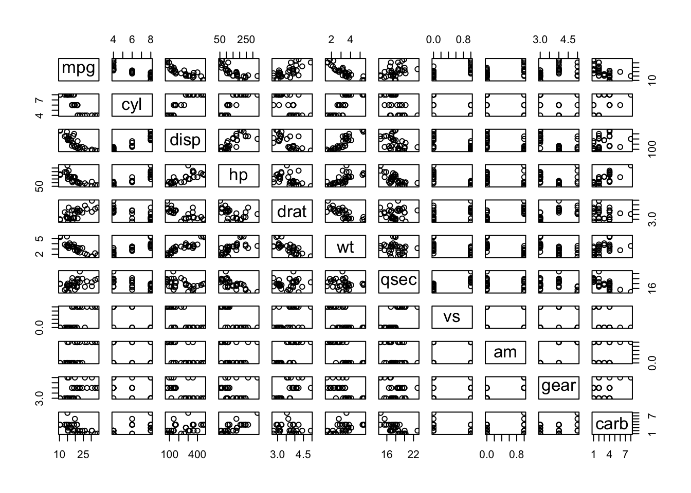

Code
plot(1:10, rnorm(10))An extension that uses the GLightbox javascript library to add lightbox styling and behavior to images in your HTML documents.
See quarto-ext/lightbox or the web example at Example lightbox Document at the bottom of this page.
To install this extension in your current directory (or into the Quarto project that you’re currently working in), use the following command:
quarto add quarto-ext/lightboxThe Lightbox extension is implemented as a filter in Quarto. Once installed, using the extension is easy.
The Lightbox extension can automatically give images in your web page a lightbox treatment. You can enable this like:
---
title: Simple Lightbox Example
filters:
- lightbox
lightbox: auto
---
You can exclude an image from receiving this automatic treatment by giving it a nolightbox class, like so:
{.nolightbox}lightbox to the list of filters in your _quarto.yml file or your document front matter. For example:---
title: Simple Lightbox Example
filters:
- lightbox
---lightbox to any images that you’d like to have the lightbox treatment. For example:---
title: Simple Lightbox Example
filters:
- lightbox
---
{.lightbox}In addition to simply providing a lightbox treatment for individual images, you can also group images into a ‘gallery’. When the user activates the lightbox, they will be able to page through the images in the gallery without returning to the main document. To create galleries of images, apply a group attribute (with a name) to the images that you’d like to gather into a gallery. Images with the same group name will be placed together in a gallery when given a lightbox treatment.
For example, the following three images will be treated as a gallery:
{group="my-gallery"}
{group="my-gallery"}
{group="my-gallery"}The following options may be specified in the front matter for lightbox:
| Option | Description |
|---|---|
match |
Set this to auto if you’d like any image to be given lightbox treatment. If you omit this, only images with the class lightbox will be given the lightbox treatment. |
effect |
The effect that should be used when opening and closing the lightbox. One of fade, zoom, none. Defaults to zoom. |
desc-position |
The position of the title and description when displaying a lightbox. One of top, bottom, left, right. Defaults to bottom. |
loop |
Whether galleries should ‘loop’ to first image in the gallery if the user continues past the last image of the gallery. Boolean that defaults to true. |
css-class |
A class name to apply to the lightbox to allow css targeting. This will replace the lightbox class with your custom class name. |
A complete example:
---
title: Complete Lightbox Example
filters:
- lightbox
lightbox:
match: auto
effect: fade
desc-position: right
loop: false
css-class: "my-css-class" #only if custom css file exists.
---The following options may be specified as attributes on individual images to control the lightbox behavior:
| Option | Description |
|---|---|
desc-position |
The position of the title and description when displaying a lightbox. One of top, bottom, left, right. Defaults to bottom |
Options for lightbox can be passed using chunk option lightbox like the following:
#| fig-cap: Simple demo R plot
#| lightbox:
#| group: r-graph
#| description: This is 1 to 10 plot
plot(1:10, rnorm(10))It is possible to create several plots, and group them in a lightbox gallery. Use list in YAML for options when you have several plots, on per plot.
::: {.cell lightbox='{"group":"cars","description":["This is the decription for first graph","This is the decription for second graph"]}'}
```{.r .cell-code}
plot(mtcars)
```
::: {.cell-output-display}
{width=672}
:::
```{.r .cell-code}
plot(cars)
```
::: {.cell-output-display}
{width=672}
:::
:::When lightbox: auto is in main YAML config, you can opt-out lightbox on a plot by setting lightbox: false When lightbox: auto is not set, you can opt-in for lightbox on a specific plot by setting lightbox: true or by setting lightbox with some options.
Here is the source code for a minimal example: example.qmd
This is the output of example.qmd.
Here is a simple image with a description. This also overrides the description position and places it to the left of the image.

The below demonstrates placing more than one image in a gallery. Note the usage of the layout-ncol which arranges the images on the page side by date. Adding the group attribute to the markdown images places the images in a gallery grouped together based upon the group name provided.


Options for lightbox can be passed using chunk options.
plot(cars)
It is possible to create several plots, and group them in a lightbox gallery. Use list in YAML for options when you have several plots, on per plot.
plot(mtcars)
plot(cars)
When lightbox: auto in main YAML config, you can opt-out lightbox on a plot by setting lightbox: false
plot(mtcars)
The images in this example were used under the Unsplash license, view originals below:
{kind=link}